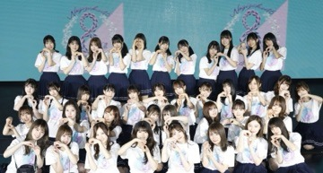

2020/0227ThuConfront
みなさまこんばんは
北野日奈子です！
2020年もよろしくお願い致します！
年女！子年ちゃんなんです！
今年もしっかり初詣に行って
お正月に来年の正月の予定の目標を立てるという！
しっかり麻雀もして素晴らしいお正月でしたね！
と年末年始を振り返ろうとしたけど
2月も終わろうとしてますね
とにかく素敵な年末年始でした幸せです！
今年も素敵な一年にするぞーーーー！ぴーーーー
堀北コンビ
8周年バースデーライブが無事に終わりました！
ライブが終わってしまうとあっという間だった～と
感じることが多いけど、今回はうおー！ちゃんと終わった～！という気持ちです！
何曲に参加していたのだろう
リハーサル期間も決してたくさんあったわけではなく、その中で全部の曲にあたらないといけなくて
いつもは歌割なんてあっという間に覚えて
振り確認だけで良かったけど
今回は振り確認に行く前に歌割りも覚えなきゃいけなくて、それから番号、体の向き、いつもと違う演出での作りだったりもうたくさん覚えることがあってヘトヘトでした！
だからこそ、終わった後に
うおーーー！本当に終わったーーー！って思ったのかも！まさか無事にちゃんとやり遂げるとは！笑
やり遂げるのが当たり前だけど
いざ達成してみると改めてみんな凄い頑張ったなと思います！
私、勉強のドリルも最初から最後まで一問も欠けずに解いたことないけど
そういう感覚でした！難しいドリルを問1から一問も欠けずに答えてみっちり埋めた感じ！
ドリルよりももっと難しいことだけど！

8周年おめでとう乃木坂ちゃん
1期生の先輩方いつもありがとうございます
「自分のこと」
たくさん練習して
本番直前の練習では
蘭世と目を合わせてニコニコしながら歌って
今までで1番いいって褒められたのに
やっぱりピンク色のサイリウムが目の前に広がると泣いてしまいますね
ステージにでる直前に涙を拭いて
笑顔でやろうと思ってたけど
自分の喉がギュッと締まってるのを感じて
泣くの我慢してるんだと気づくと
また少し過去に引きづらてしまうというか。。
彼女の歌であり
私のことを歌っているようで
それが私と彼女とで重なる部分が多すぎて
また思いが溢れてしまいます
別に何も後に引くような後悔はないのに
どうしてもどうしてもってあの頃の思いに
引きづられてしまうのが
自分が思ってるより自分は弱くて泣き虫なんだって今の自分の大きさに気づきます。
今ここでステージに立って彼女のかわりに
蘭世と私で歌うことの意味は十分にあったと思います。蘭世と一緒にできたこと嬉しいよ
蘭世と一緒にこの歌に向き合うことができたこと
良かったって思う！
私がどうしようもない弱々にならずにすんだよ！笑
いつも、日奈子は日奈子らしく！って
俯く私に前を向かせてくれる
もしまたいつか機会があれば
その時はまた2人で
今度は楽しい思い出ばかりを胸に
歌えたらいいね！
楽しいことを思い出しても
泣いてしまいそうだけど、私たち。。。笑
自分のことを歌うことが決まった日の夜に
ひめたんに連絡したときに凄く喜んでくれて
それがとても励みになったよ！
本番出る直前も連絡して
終わった後に携帯を見たら
返信がきてて開いたら
写真と動画が届いてたよ(｡ρω-｡)
どんな内容かは秘密だけど
どんな場面でも自分の思いをお互いに共有してきた
私とひめたんらしいやりとりだったね！
だいすきだよ！
大人への近道 君に贈る花がない は、
私にとってやっぱり特別でした！
それにもまた気づけた！良かった！
サンクエトワールが大切です
バースデーライブって自分の参加曲以上に覚えることがたくさんあるから、凄く大変だけど
乃木坂46の素敵な曲に寄り添えられる1年に1度の
この日は改めて乃木坂のことをよりよく感じられて思えて素晴らしい日なんですね
こんな素晴らしい日をまた迎えられたらいいです
今のこの自分を予想できてなかったように
未来の自分を予想できない
何があるかわからないけど
いつまでも乃木坂46のことは大好きで大切で特別なんだろうなと感じた4日間でした！
そして昨日発表されましたが
二期生ライブが中止になりました
仕方のないことです！皆さんの安全が大事で
なにより心から楽しんで一緒に気持ちを共有したり思いをぶつけ合う熱いライブにしたいと思っていたからそれにはまず安全な場所の確保が大事ですし！
今はとりあえず私達が決められない大きな決断を皆さんのことを思ってしてくれた
大人の方達に感謝です！
気持ちの違うところにも本音はあります
でも中止になって
安心したという気持ちも本音です！
やっぱり文字にして伝えるのは自分の心を覗かないといけないので苦手です(｡ρω-｡)
二期生のことを思うと悔しいなと。
どうしたっていつだって
スッと通り抜けられない扉があって
またちょっとだけ立ち尽くした気分です
人生は選択して決まっていくのか
それとも選択することさえもすでに決まっている運命なのか、私はどちらとも言えないのかなと
選択した道もあれば運命な部分もあるだろうし！
だとしたら、タイミングとはどういうものなのか
人生のタイミング、選択のタイミング
タイミングが悪いだとなんだか
すでに負けている気がするので
逆風にさらされているということにします。
この逆風にさらされている中でも立ち向かえる
いつか追い風にできる強い私達だから
二期生は乃木坂46の二期生として集まったのかな、これは間違いなく運命です
二期生の皆んなとだからどんな困難も
逆風も乗り越えられてきたんだと
だから、今回のこともまた
私達ならこの目の前の扉を突破できると
そう思うのできっとくる
次の機会を楽しみにしていて下さい！
とはいえとてもとてもとーっても悲しいので
私は我慢して泣かないので
私の代わりに皆さん泣いてください！
二番目は嵐
二期生曲のアナスターシャについてはまた
MVが解禁されたら話します！
とにかく本当に二期生が大好きです
みんなが大好きです
私はここにいられて幸せです
また書きます！
2020/02/27 21:45


コメント(906)
忙しい中ブログ更新してくれてありがとう。バースデーライブ4日間お疲れ様でした₍ᐢ › ༝ ‹ ᐢ₎感想すぐ755にコメントしようと思ってたんだけど、いいたいことがなかなかまとまらなくて、どうやったら気持ち伝わるかなーとか色々考えてたら1日経っちゃってた( ；ᵕ； )
2期ライブ、中止になっちゃったけど前向きな発言をしてくれてありがとう。絶対また叶えようね！日奈子にずっと着いていくからね！いつもありがとう！
がんば！！！
バスラおつかれ！！
嵐は常に吹いてるぞー
バスラ本当にお疲れ様！
来週のオールナイトニッポン楽しみにしてる！！
握手会もこの先開催されるかどうか不安ではありますが開催された時には日奈子ちゃんにいっぱい伝えたいことがあるから楽しくお話しができるといいな…
ライブとかまじでよかった！！
握手会今度行くから待ってて！
がんばれ日奈子！！
がんばれチップ！！
きいちゃんまじで好きだ！
握手楽しみに待ってるよ！
二期生の嵐を
吹かせましょうぞ〜〜⁉︎(^^)
その時はきいちゃんの日常が見たい⁉︎
きいちゃんバスラお疲れ様
可愛かった
いつもきいちゃんの笑顔にめっちゃ救われてるよ！ありがとう
自分のことよかったよ！
めちゃくちゃ感動しました！
バスラ4日間お疲れ様でした！
2期生ライブ残念でした。。、
2019年は沢山お世話になりました！色んなとこで会ってめちゃくちゃ楽しかったよぉ~♪
2020年の初詣乃木神社に行ってきたんだけど、おみくじ吉だったよ(๑•́ω•̀)日奈子さんはどうだったかな？
2020年一発目のイベント、8th birthday live お疲れ様！沢山覚える事とか多くて大変だったよね笑 自分２日目しか見れなかったけどすごく楽しかったよ！特に「かき氷」と「ゴルゴンゾーラ」、「行くあて」はもう素晴らしかったです。「ゴルゴンゾーラ」初めてLiveで見たけど可愛いが具現化してて、メロメロになってた笑 「行くあて」はもう見入っちゃって感動というか浸ってました。
正直、「アンダー」「日常」が見たかったけど、見れなくて非常に悔しいなぁ。でも周りのこの2曲聴いた人達がみんな「すごく良かった」「痺れた」「また聞きたい」って言ってて嬉しかったです。パフォーマンスしてる時の日奈子さんはすごく輝いていて気迫あってそれが伝わったんじゃないかなぁって思いました。
「2期生ライブ」発表されてすごく嬉しかったし、夢の１つが叶うと思ってだけど、悔しいです。
悔しい。悔しい。ほんと悔しい。
絶対またチャンスがくるから、そのときに気持ちぶつけてほしいし2期生みんなの作り上げる物が見たいです。だからずっと応援するし、見続けます。(約束します)
25枚目選抜おめでとう(٭°̧̧̧ω°̧̧̧٭)
憧れのまいやんを選抜という位置から送り出すことができて良かったです。楽しい時間を沢山過ごしてまいやんに愛を伝えて最高なシングルにしてください。それが僕にとってもすごく幸せになるので笑
今コロナウイルスでマジで日本やばいからまじで気おつけてね！(家からでちゃダメだよ？)(マスクもしないと！)(てかマスク品切れしてるけど持ってるのかなぁ？笑)
あと意外にも、インフルエンザ(ヘイヘイヘイ！)もかなり流行ってるからそっちも気おつけてね！
じゃあ次いつ会えるか分からんけど、お互いに健康に過ごそうね(๑•̀ㅂ•́)و✧
たまには我慢しなくてもいいんだよ
こうた(富岡義勇)より
感動をありがとう。
堀北コンビ最強だね！
バスラすげーよかったよ！
2期生ライブ残念だね
うん、好き！
(握手会久しぶりに楽しみにしてます！)
自分のこと、聞いててピンクに染った会場を見て僕もグッとくるところありました。
これからも僕はずっと応援し続けます！
ライブお疲れ様、『自分のこと』は本当に感動したよ
二期生の嵐、楽しみに待ってます！
何回も読むね、堀北コンビの画像最高だよ
コロナ大丈夫ですか？
体調には十分気をつけてくださいね？
自分のこと最高だった！
2期生ライブまたいつか見れるの期待してる！
おじさん感動した
そしてバスラも4日間お疲れ様でした〜
ひーこちゃんの参加してた曲はどれもかっこよくて素晴らしかったなぁ
特に、センターの日常やアンダーはもちろんだけどなんと言ってもひめたんのソロ曲自分のことは会場全体がピンク一色になってすごく感動しました！！
二期生ライブは残念だったけど、大好きな曲の多い二期生楽曲の新曲楽しみにしてます！！！
自分のこと...生で聴きたかったです...
行くあてのない僕たちすごく良かったです!!
素敵でした。
2番目は嵐
嵐が晴れた素敵な姿をまた見せてください！！
大好きです。
ほんとにほんとに感動しました。
歌詞だけでも泣けてくるのに、きいちゃんが涙をこらえながら歌うからもっともっと泣けてきました。
あの景色は忘れられません。
感動をありがとうございました！！
また歌って欲しいです。
ブログ更新ありがとう!!!
個握で会えるのめっちゃ楽しみだよ！
これからも頑張ってね！
ずっと応援してます
二期生ライブ中止だけどでもいつか二期生ライブ必ずやって欲しい！！
二期生大好きだよ
ももんが
バスラお疲れ様！！！
日奈子ちゃんが頑張ってる姿みてめっちゃ感動した！
これからも2期生みんなで壁を乗り越えって行ってね！
コメントする